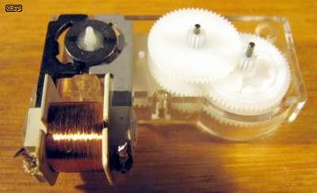

|
|
| Elliott Sound Products | Clock Motors & How They Work |
Rod Elliott
Page Updated 29 August 2008
 Main Index
Main IndexAlthough there are no plans at all to cover the history of electric (and electronic) horology, it is worth mentioning that it really started in around 1840. Bain (England) and Hipp (Germany) both invented electric clocks around this period, as did several others. As with most periods in history, a rapid succession of new designs followed the initial inventions. Not all were practical, some would have had serious impulse errors, and a few had switching difficulties. Selecting appropriate contact materials was trial and error at the time, because nothing else in the then new electrical age had a requirement for very reliable contacts that required almost no power to activate. Even now, making good mechanical contact with very low voltage and current and infinitesimal contact force can be difficult.
Normally, horology (the science of clock making / time) requires that the reader understand basic mechanical principles, but not electronics. Unfortunately, once electronic circuitry becomes involved in anything, it tends to take over - an all-too-apparent intrusion with timekeeping. Where clocks were once a thing of value and beauty, they are now a commodity item, available from one's local supermarket. As we will discover in this article, clouds may indeed have silver linings if we know what to look for, so I certainly don't think that all is lost.
Some of the terminology here will be unfamiliar to clock enthusiasts, and unfortunately there is little that I can do about that. Just as horology has its terms and specific names for things (wheels, pinions, arbours, etc.) so too does electronics ... only more inscrutable. While one can see a wheel turn, electrons are invisible, and special equipment unrelated to clock-making is needed to "see" what is happening.
In order to make this as painless as possible, I have minimised the amount of "electronics speak". This is not an easy task, so there are a few terms that require explanation before moving on.
In addition, electronics makes extensive use of engineering notation (a sub-set of scientific notation). The main multipliers are ...
The 'E' in the above denotes the exponent - all scientific calculators have this function. Fortunately, you won't really need to know or understand these in great detail, but the article would be seriously lacking if these terms were left unexplained.
The multipliers marked with * are those you may see referenced in this article, and are the most common. The others are used extensively in electronics, but are less likely in electric horology.
Where needed, the terms will be explained in more detail as we get to them. An understanding of electronics is not needed to be able to work on electric clocks, but it is needed to understand how they work. Some are far more difficult to understand than others, and paradoxically, the simplest of all the clocks (the quartz crystal types) are the most complex. All the complexity is in the electronics though, and the circuitry is usually not serviceable even if you wanted to.
The ESP main website has an interesting series of articles for beginners that you may find useful. The general concepts here are explained more completely in part 1 - the other sections will probably not be needed unless you develop a sudden fascination for electronics in general.
Strictly speaking, every clock ever made has a motor, with the possible exception of the sundial  . Most traditional clocks use either a spring or a weight, and since these provides the motive force needed to keep the clock running, they are motors. For the purposes of this discussion, we will only look at electric motors - not because the mechanical motors are less interesting, but because the electric versions are not as well understood by most amateur horologists.
. Most traditional clocks use either a spring or a weight, and since these provides the motive force needed to keep the clock running, they are motors. For the purposes of this discussion, we will only look at electric motors - not because the mechanical motors are less interesting, but because the electric versions are not as well understood by most amateur horologists.
A lengthy search on the Internet reveals almost nothing about how the tiny motors used in clocks and watches function. There are some general descriptions, but no real data that helps anyone to understand specifically what makes them tick ... as it were.
An important difference exists between all electrically driven clocks (as distinct from those that use a motor to rewind the clock) and traditional mechanical clocks. The latter use a very slow motor, whose output is geared up by the train. Each successive wheel turns faster than the one before it (except for the motion works). Each wheel drives a pinion, so the wheel on the same arbour turns faster. This continues to the escapement wheel, the fastest of all the wheels in the going train.
Electrically driven clocks are the opposite. The motor is the fastest rotating part of the clock, and the train has each successive wheel going slower than the one before it. Pinions now drive wheels, reducing the speed and increasing torque with each stage. This simplifies the movement, because the amount of power needed at the motor is negligible provided that the first couple of wheels are reasonably free. Some electrically driven clocks are perfectly capable of totally destroying poorly lubricated pivots, because there is so much power available from the motor. Try stopping the output shaft of a 1 RPM synchronous motor assembly! The motor itself may not have much power, but the gearing ratio magnifies the torque to frightening levels - more than enough to bend/break teeth on wheels, or grind frozen pivots into oblivion. It is even conceivable that there is enough power to bend arbours if the wheels and pinions are strong enough.
A mechanical clock has a maximum torque defined by the spring or weight, and this cannot be exceeded (other than by a maniacal owner). They will usually stop well before serious damage is done, signalling that it's somewhat past the time for a service. Of course, the opposite is also true ... a spring or weight driven clock applies a consistent (and often considerable) force on all wheels, pinions and pivots, causing inevitable wear over time despite the fact that most move very slowly.
Many electrically driven clocks apply minimum force to anything in the going train, and the only work that needs to be done is to lift the hands between around 7 and 11 on the dial. Indeed, some electric clocks are so close to the limits as regards power, that the mere act of raising the minute hand can cause a cyclical error, where the clocks runs slightly slow when the minute hand is between (say) 7 and 11 on the dial, and slightly fast between 1 and 5. This is due to the weight of the minute hand! There are also some mechanical clocks that have the same problem.
The motors used in electrically powered clocks fall into three broad categories. These are ...
Each of these types will be covered here, with a bit of background information for each type.
The invention of the induction motor (by Nikola Tesla in 1883) was the precursor of the synchronous motor. Induction motors are useless for clocks. Although their speed is related to the mains frequency, it varies with the load. There is actually little difference between a conventional induction motor and a synchronous type - the primary difference is that synchronous motors use a magnetised rotor. This allows the synchronous motor to rotate at a speed that is directly related to the mains frequency, and without any load dependence.
One of the earliest synchronous clock motors was made by the Warren Clock Company of Ashland, MA (patent #1,283,431 applied for on 21 Aug 1916 and granted 29 Oct 1918). This motor used a shaded pole design, and rotated at 3,600 RPM (60Hz mains supply ... a 50Hz version runs at 3,000 RPM). A dual worm drive reduced the speed to 1 RPM. A redrawn picture of the motor (from the patent drawings) is shown below. Unfortunately, I have not been able to verify who actually invented the synchronous motor, but the basic principle existed before the Warren Type A was patented, as is explained by Henry Warren himself. An interesting document by the man behind the Warren motor is Modern Electric Clocks - well worth reading. It demonstrates clearly that Henry Warren was quite the visionary, and forever changed the horological landscape.
Figure 1 - Warren Type A Synchronous Clock Motor
Some additional details on this specific motor can be obtained from the ClockHistory.Com website. The speed of the motor was probably unfortunate because clocks have always been essentially low speed devices, thus keeping wear to the minimum. At 3,600 RPM, the Warren Type A motor is definitely not low speed. The speed is fixed by the number of poles (the iron pole-pieces next to the motor itself). This early design has two poles, and the speed of a single phase synchronous motor is given by ...
RPM = ( f * 60 ) / ( n / 2 ) (where f is mains frequency in Hertz, and n is the number of poles)
Note that the shading coils do not provide additional poles. By placing a heavy copper ring around the "shaded" poles, a very small shift of the magnetic field is produced. This is just enough to ensure that the motor will actually start, and will start in the required direction. Left to their own devices, synchronous motors will usually not start at all, or may start in either direction if lightly loaded. This has been an on-going problem with all synchronous clock motors, especially the low speed types. Many of these use a friction clutch to drive a small pawl that "bounces" the rotor in the right direction should it happen to start backwards.
Figure 2 - Warren Telechron Type B3 Synchronous Clock Motor
Warren motors were in use for many years - the one above (a Type B3) is a much later unit, using a sealed motor/gearbox unit. It retains the shading coils (one is hidden under the nameplate) and the general scheme of the older units. As is probably obvious from the new looking binding around the coil, this motor was open-circuit when I got it, so was rewound. The original coil former was unsafe by modern electrical safety standards, so was replaced by one that I made using heavy duty fibre insulation. When completed, the entire coil unit was vacuum impregnated with varnish to prevent moisture or other contaminants from damaging the windings again.
Unfortunately, the thinnest wire I have available is 42 gauge (0.0635mm diameter), so by the time the bobbin was full, the coil is only rated at around 150V at 50Hz. This is easily reduced without any power loss, by using a carefully selected capacitor. I do not recommend that anyone without detailed electronics knowledge attempt this, as some seeming impossible effects can play havoc with the end result. I will not go into details here, as it is beyond the scope expected of even knowledgeable electric clock restoration persons. There are other dangers too, so please leave such modifications to qualified electrical persons.
Note that all synchronous motors are rated for a specific mains frequency (50 or 60Hz), and will require a modified gear train to be able to use a different frequency. They cannot be rewound to suit a different mains frequency - the rotational speed is determined by the number of poles and the applied frequency, not the coil.
| Figure 3 - Sankyo Multipole Motor (Rotor Removed) | Figure 4 - Sankyo Multipole Motor (Rotor Installed) |
|---|
Most synchronous clock motors use multiple "claws" to create a large number of poles. As can be seen from the above photos, it isn't actually necessary to maintain perfect spacing or to even make sure that all poles are present! The above motor is 24 pole, so rotates at 250 RPM (with 50Hz mains frequency).
The general principle of the multipole synchronous motor is shown in Figure 5. The coil is held between two plates, each with radial sections that are then bent upwards to form a ring of poles around the rotor.
The rotor has multiple magnets embedded in a (usually) plastic disc, and these will align with the stator poles when no power is applied. When AC current flows in the coil, each stator pole alternates between North and South polarity, in sympathy with the applied AC. With 50Hz mains, this changes 50 times per second (60 with 60Hz mains).
When the power is first applied, the rotor typically just jiggles around for a short time, until a N on the rotor aligns perfectly with a S on the stator. As the poles alternate between N and S magnetic polarity, the rotor follows the field and turns, jumping from one pole to the next to maintain attracting magnetic polarities. It may choose to run in either direction at this time.
By adding a direction-sensitive pawl, the motor is usually set up to ensure the pawl engages with the rotor should the motor spin in the wrong direction. This stops the rotor, but adds sufficient "bounce" to force the motor to run the right way. The lug on the rotor can be seen in Figure 4 - the pawl is attached to the first "wheel", driven by the rotor pinion. A simple viscous (oil) drive pushes the pawl into the rotor should it spin in the wrong direction. Correct rotation keeps the pawl against the right hand red post and out of the way.
This type of synchronous motor does not actually spin smoothly. Its rotation is in steps, and this can be felt if one gently touches the rotor or the first wheel. There is a slight vibration that is quite evident, and this is similar to the behaviour of stepper motors (as used in printers, fax machines and many other computer driven motor applications). Although there may not appear to be any similarity whatsoever, a synchronous clock motor is very similar to the motor used with quartz oscillator driven movements.
A significant disadvantage of synchronous motors is that they are frequency sensitive. A clock designed for the Australian or European market will run 20% fast in the US, and a US motor will run 16.7% slow elsewhere. On the other hand, they are more accurate (long term) than most quartz movements, because the power utilities worldwide maintain exceedingly accurate control over the number of AC mains cycles per day. In Australia, that means 4,320,000 cycles per day (50Hz mains).

Figure 6 - Timer Synchronous Motor
Above, you can see the evolution of the simple synchronous motor. The mechanism shown is from an electrical time switch of fairly recent vintage. Gone are the defined poles using claws, and the motor has been simplified down to the bare minimum. It still needs the automatic reversal mechanism, and the motor shown is a 6 pole type (so will rotate at 1,000 RPM). If you compare the above motor with a quartz clock motor (see below) the similarity is immediately obvious - in fact there is hardly any difference except physical size.
This motor doesn't have enough turns to support the full 240V mains voltage. Within the housing of the time switch, there is a resistor to reduce the maximum current flow. Without this, the motor would burn out in only a few minutes. This is a similar arrangement to that used in the rewound Telechron motor described above, and while it is cheaper than a capacitor, the resistor uses more energy and generates heat (although neither is troublesome).
Magnetic impulse motors really can't be understood properly unless you know a few basic principles. These go back to the very beginnings of our understanding of electricity, coils (solenoids) and magnetic effects when current flows through a coil of wire. A coil of wire forms an inductor, and these components have seemingly very odd behaviour. Only the basics will be described here, but a wealth of information is available on the Net for those who want to know more.
Magnetic sources are inherently bipolar (or dipole) - you cannot have a north pole without a south pole and vice versa. A compass may be used to determine the polarity of a magnet, and North on the compass points to a south pole (the earth's magnetic "North" is in fact a south pole, and the north pole of a compass is attracted to its opposite polarity). With magnets, opposite poles attract, and like poles repel.
Figure 7 - Compass, Magnet and Solenoid
The fundamental principle of coils and magnetism is known as Fleming's Right Hand Rule. When the fingers of your right hand are curved around a coil with the finger tips pointing in the direction of "conventional" (positive to negative) current flow, your thumb points to the end that develops a north pole. Figure 8 shows the basics of the right hand rule, as well as the signal polarity generated when a magnet enters the coil.
Figure 8 - The Right Hand Rule Applied to a Coil, & Voltage Generation
In Figure 8, you can also see the voltage developed in a coil as the north pole of a magnet passes through it in the direction shown. Should the same pole pass in the opposite direction, the generated (or induced) voltage is reversed, so the terminal marked + becomes - and vice versa. Reversing the magnet causes the electrical relationships to reverse. The magnitude of the voltage is proportional to the magnet strength, number of turns on the coil, and the speed of the magnet. If the magnet is not moving, no voltage is developed. With any coil that is subjected to a magnetic field (including a field within the coil because a current is passing through it), the generated voltage due to the magnetic field is proportional to the rate-of-change of that field. A static field generates zero voltage. When current is applied to a coil, a magnetic field is created. The created magnetic field then generates a voltage that opposes the applied voltage. When the coil current settles to a steady value (limited by the coil's resistance and the applied voltage), the magnetic field becomes static, and no further voltage is generated by the coil itself.
The next principle that requires a basic understanding is that of a transformer. A transformer is nothing more than two coils of wire sharing the same magnetic "circuit". If a varying voltage is applied to one coil (the primary), the voltage across the other coil (secondary) will vary in direct proportion to the number of turns on each coil. For example, if 1V AC is applied to a primary of 2,000 turns, 2V will be developed across a secondary of 4,000 turns. This assumes that none of the magnetic "flux" is lost - with clock motors there is usually considerable loss (called flux leakage), but this is of little consequence. For "real" transformers, an iron core is used to concentrate the flux through the windings to reduce leakage. While this is shown in Figure 9, this is for the sake of completeness and clarity only.
Figure 9 - Basic Transformer Action
A potential problem with magnetic motors in horology is impulse error. Unless great pains are taken, the impulse may cause a small deflection of the pendulum, but not in the intended direction. This (amongst other things) can lead to timing errors. Ideally, the impulse should be delivered at exactly the centre of the arc, where the pendulum is at maximum velocity. Under these conditions, the disturbance to the natural swing is minimal. Should the impulse be delivered at one extremity of the swing where the pendulum is close to stopped, the impulse will cause maximum error due to unequal left and right swings. Note that most (but by no means all) impulsed movements use magnetic repulsion to drive the pendulum. Using attraction could lead to the pendulum striking the coil. The closer the distance between a coil and a magnet, the greater the attraction or repulsion. Attraction is not "fail safe", as is repulsion. Some early designs used a solenoid - a coil with an iron core to concentrate the magnetic field (an increase in field strength of 100 times or more is possible by adding a core).
Circular error with many electric and electronic clocks may be rather high, because the pendulum typically covers a larger arc than a well designed mechanical movement. A pendulum covering a large arc takes slightly longer to complete a cycle than one with a short arc, and as the battery voltage falls, so too does the arc length. At low voltages the clock will speed up as the pendulum arc decreases, until it finally stops because of insufficient power.
Short (and therefore fast) pendulums are much easier to drive using sensing coils, because high speed creates a higher voltage (all else being equal). Short pendulums are therefore much easier to sense because fewer turns are needed for the sense coil to obtain a usable sense signal.
Magnetic Materials and Magnets
Magnets are not always well understood. There are many different magnetic materials, but most are based on iron or various alloys containing iron. Materials used for making magnets include ...
Of these, Neodymium magnets by far the strongest available. No material is intrinsically a magnet though - it has to be magnetised by aligning the magnetic "domains". These are imaginary magnetic dipoles within the magnetic material itself. When demagnetised, these domains are random, and are scattered throughout the material, giving a net magnetism of close to zero. The process of magnetisation aligns these domains as shown in Figure 10.
Figure 10 - Non-magnetised and Magnetised Material
The result is that all (or at least most of) the magnetic domains are aligned. The N and S poles internally cancel each other, so the poles appear to be concentrated at each end of the magnet. One end will be North, and the other South. No magnet can be a monopole, having only a N or S pole. Any magnetic material, once magnetised, will have both poles, although some clock motors have used an arrangement that is seemingly impossible. I refer to Bulle clocks, covered in more detail below.
The magnetic field is static - it can't be "used up" to extract energy from the magnet, although many magnets do de-magnetise themselves over time. Relatively recent developments have given us magnets that are far more powerful than any of the traditional materials (such as hardened steel), and these materials resist de-magnetisation so well that they deserve the title "permanent" magnet. Magnetically "hard" materials are those used for magnets, while magnetically "soft" materials are used for electro-magnets, transformer cores and motor armatures. The ability for a material to retain magnetism is called remanence (sometimes called remnance), and its desire to resist becoming magnetised in the first place is called reluctance. You don't really need to know this . There's a lot more to the topic than the brief description here, but a complete understanding is not necessary to work with magnetic materials used in clock motors.
There is no need to understand all the functions of a transistor, and basic knowledge of the use of a transistor as a switch is all that is really needed. A transistor is a current amplifier ... a small input current is amplified, providing a much higher output current. Many texts erroneously refer to a transistor's voltage amplification, but this is derived using external parts. A transistor is inherently a current amplifier. There are many different types of transistor including Field Effect Transistors (FETs) and Metal Oxide Semiconductor Field Effect Transistors (MOSFETs) that work differently from the above, but in horology, only "small signal" Bipolar Junction Transistors (BJTs) are normally used. These are usually rated for a maximum output current of perhaps 100mA, although clocks usually require only a fraction of that current. Many older clocks used the only devices that were available at the time ... germanium. These transistors have an advantage that less voltage is needed to overcome the internal voltage drop between the base and emitter, but they are very temperature sensitive and have relatively high leakage (current drawn when the transistor is turned off).
There are two different polarities for transistors - NPN and PNP (a reference to the internal electrical structure of the device). NPN transistors require a positive current into the base (the input terminal), and the collector (output terminal) also requires a positive voltage. PNP devices are the opposite. A very basic explanation is shown below. Voltages shown are for silicon transistors.
Figure 11 - Basic Transistor Action
The 10,000 ohm (10k) resistor limits the current into the base. This terminal has a very low resistance once the voltage exceeds 0.65V. The transistor is assumed to have a gain of 100 (not unreasonable), so 85uA (microamps) of base current will cause 8.5mA of collector current. If the base is supplied with a small current (as shown in red), there will be a much larger change of collector current - this is how the switching circuit of transistorised clocks takes the small signal from the trigger coil, and forces a much larger current through the impulse coil. Note that all voltages are measured using the transistor's emitter as the reference point.
Germanium transistors will start to conduct at a much lower voltage than silicon - about 200mV instead of 650mV, and the voltage is less well defined. For clock motors, the lower voltage is an advantage because a smaller sensing coil voltage is needed to activate the circuit. Leakage is not a problem because of the low voltage used - typically 1.5V, or occasionally 3V.
As the base voltage rises, the collector voltage falls - this is because the transistor turns on, so the majority of the battery voltage is across the load, not the transistor. When fully turned on the collector voltage may fall to less than 0.1 Volt. There's a great deal more to the action than this, but it is not necessary to go any more deeply unless you plan on restoring electronic clocks on a very regular basis. Even then, the basic theory above is probably enough to see you through any normal repair.
The use of batteries allowed horologists to find new and exciting ways to pursue one of the "holy grails" of clock-making ... the ability to run for long periods with a minuscule power consumption. The early dry cells were large and expensive and had very poor performance compared to those of today, but by keeping power consumption to the minimum, even the cells of old could last for over a year.
The impulse motor was used in many of the first "electric" clocks ever made. Bulle clocks, Hipp-toggles, Eureka, Tiffany "NeverWind" and similar movements use simple impulse motors. These early designs used a mechanical switch, which is subject to wear and tear, mainly because of the small electric arc drawn every time the switch opens. Although it is now very easy to stop the arc, doing so makes the clock non-original, and most owners are unwilling to make the modification (or have it made for them). It is actually very easy to add the modification, and it can be removed just as easily. Early electric clock makers did not have access to the components that are readily available now.
The principle behind these motors is as shown below - the interaction of a magnet and a coil. Coils used with magnets will rarely use an iron core, because the iron would attract the magnet and cause highly unpredictable (and undesirable) results. While most magnetic motors use magnetic repulsion, there are exceptions. For example, Tiffany NeverWind clocks used a torsion pendulum, impulsed using dual solenoids (iron cored coils, attracting an armature attached to the impulse mechanism). Other clocks have used solenoids as well, and the general principles are shown in Figure 12 below.
Figure 12 - Solenoid Based Impulse Motor
In (A) above, the armature is attracted to the core (also called pole pieces) when current flows in the coil. The available force is very low when the armature is some distance from the core, but becomes a great deal higher as the gap is reduced. The spring can be located anywhere, but is needed to ensure that the armature actually releases when the current is stopped. Even a small residual magnetic field would otherwise prevent the solenoid from releasing with no spring.
The second variant (B) uses part of the core as an armature. When current is applied, the armature is pulled into the coil, and can exert considerable force. A return spring is shown inside the core, but it can be located anywhere that will work to pull the armature out of the core when current is removed.
A resistor is commonly used (it may only be a roughly wound coil of resistance wire in some early clocks) in parallel with the coil. The purpose is to absorb some of the electrical field that is generated when the contacts open, and thereby reduce the arc. Without a resistor, a mechanically switched circuit can produce a short term voltage of many hundreds of volts, and it is this that creates the arc. A better solution exists today, but is not original. Use of a diode (a special semiconductor device that only conducts in one direction) can completely eliminate the arc, and draws no current from the battery when the contacts are closed. Adding a diode will introduce a delay before the armature releases, but usually only by a few milliseconds.
Many other clocks use coils switched as shown above, but without a core. These almost invariably react with a magnet, and the magnet may be stationary with a swinging coil (e.g. Bulle and similar), or may use fixed coil(s) with a swinging magnet (e.g ATO and similar). The principles are much the same in all cases, and most will switch the coil(s) to repel the magnet once contact is made.
With all of these mechanisms, there are so many possibilities that it is simply not possible to show every variant. Where a solenoid is used, the general principle is the same as either A or B in Figure 11, although the physical form may be quite different. The primary differences are in the mechanical linkages, the methods used to activate the switching system, and the geometry of the coil, pole pieces and armature. These are as varied as the imaginations of those who designed them.
Figure 13 - Gravity Lever Motor
For example, the gravity lever motor is worth looking at. It uses a small roller on an incline to impulse the pendulum, and the "motor" is reset when the catch is released (once only for 15 swings - 30 second intervals) and the roller reaches the end of the incline. This pushes the pendulum with the mass of the gravity lever. When properly set up, the impulse will be at exactly the centre of the pendulum's swing, and is not reliant upon the supply voltage. Provided the cell (or battery) has enough power to reset the gravity lever, timekeeping is unaffected. A similar mechanism was the basis for the Shortt free-pendulum clock, which appeared in 1925, and was declared the best timekeeper of that period. The Shortt clock was used at Greenwich Observatory from 1925 to 1942, when it was superseded by clocks using quartz crystals (pity).
The original Shortt clock got its "free pendulum" name from the fact that the pendulum swings in a near vacuum, so has very low air resistance. It also is not expected to perform any work, other than to trigger the impulse system. This minimises any loading on the pendulum, as it only needs to drive a contact (to drive slave clocks) - it does not need to drive a mechanical movement. The original clock was arranged as a master-slave system, rather than a complete timekeeper. The Q of the pendulum is extraordinarily high with such a system - an absolute requirement for good timekeeping. Note that a pendulum with a high Q may still be a bad timekeeper, but an otherwise perfect pendulum (or other resonant circuit) with a low Q will not. This is covered in the on-line Pendulum Lab - more information than you ever wanted to know about the behaviour of a pendulum.
Impulse mechanisms are usually very simple, and only a few things can go wrong ...
Of all the possibilities, the contacts and wiring are probably the most troublesome in older clocks. The applied voltage is small (typically 1.5V) and the current is very low, so why do the contacts arc? The answer lies in the definition of an inductor at the beginning of this article. It stores energy as a magnetic field, and when the current is removed this field collapses. Remember that as the magnetic field around a coil changes, a voltage is developed. This voltage is proportional to the magnet (or magnetic field) strength, the number of turns, and the rate of change of magnetism. When contacts open, the rate of change is extremely fast - almost instantaneous. (This behaves the same way as the system used to produce the spark in the spark plugs of a motor car engine.)
Although the field strength is small, there are a great many turns, and the voltage developed can easily exceed 200-500V for a very short period - typically around 10us (10 microseconds). This voltage causes the arc (and can also damage the insulation of the coil), but when the early switched impulse clocks were built there was no easy way to prevent the excessive voltage. Methods were known to electrical engineers before 1900, but few of them were ever involved with clock making. Adding a resistor in parallel with the coil is generally sufficient to reduce the voltage pulse dramatically. A 5,000 ohm resistor (5k) will reduce a 300V pulse to less than 8V with a typical coil. The resistor does cause the current to increase slightly.
| Resistance | Pulse Amplitude | Pulse Duration | Wasted Power |
| None | -330V | 8.8us | 0 |
| 100k Ohms | -88V | 30us | 22uW |
| 10k Ohms | -14V | 170us | 225uW |
| 5k Ohms | -7V | 380us | 450uW |
| Diode | -0.6V | 2.5ms | 0 |
The above table shows the relationship between the resistance used, the spike voltage and the wasted power (while the contacts are closed). This assumes that the coil has around 2,000 turns, and is supplied from a 1.5V cell. The supply positive is switched, and note that the spike generated is always the reverse polarity from that supplied via the contacts.
The diode was included to demonstrate that it suppresses the spike very effectively, but also increases the duration of the coil current. By using a diode to suppress the back EMF ("Electro-Motive Force" as it is known in electrical terms), a smaller amount of energy can be applied to the coil because almost none is wasted generating high voltages that no-one wants anyway. While using a diode is appropriate for new designs (or rebuilds), it is not original, so should be installed unobtrusively (it can even be "buried" inside the coil itself).
Be warned that using a diode makes the circuit polarity-sensitive - the DC must be applied the right way, or the diode will short circuit the cell or battery! A resistor has no such limitation, and many (most?) motors using switched circuits will work with either polarity.
An example of an electro-mechanical switched contact motor is shown below. This is an unusual design, and not one I've seen referenced anywhere else.
Figure 14 - Balance Wheel Motor
This motor system is based on a balance wheel with a 1 second period. The entire coil assembly moves over a stationary magnet when the contact on the balance wheel closes - this part is almost identical to the system used in most modern hard disk drives. The coil movement impulses the balance wheel, and also advances the going train. The coil is quite large, and extends almost the full height of the mechanism (the top can just be seen in the shadows). The impulse mechanism is not visible, but is a simple ratchet acting on the grey wheel at bottom centre. The part you can see is the retaining pawl to prevent the mechanism from just moving back and forth.
The small brown cylinder you can see near the coil pivot is a diode, and is used to prevent the coil's back EMF from damaging the contacts. These have the advantage of a wiping action, so minor contamination is avoided. The small hair spring at the coil's pivot point provides the second connection to the coil, the other being via the balance wheel contact and the hair spring. Note that the odd shape of the hair spring appears to be intentional.
While a pendulum should ideally never be damped because doing so will reduce its Q factor, some electric clock motors do include damping. Whether this is by accident or design is difficult to know. Based on the basic theory of moving a magnet through a coil of wire, a damping system is created if there is a conductive metal tube as part of the clock's design. Many Kundo electronic clocks (and presumably others as well) have just this ... there is an inner brass tube that holds the coil cover in place, as well as a brass mounting plate at the end of the coil. Both of these act as a "shorted turn", a single heavy gauge conductor that is the equivalent of a single turn of wire, but is short-circuited.
In such an arrangement, the magnet generates a current in the coil, and that current produces a magnetic field. The magnetic field produced opposes the magnet's progress through the shorted turn, and thus applies damping. This is rather difficult to demonstrate with a diagram, so I suggest that those interested should try the following experiment ...
You have just experienced magnetic damping first hand. It's a great trick to play on visitors too, because they will have no idea how you made the magnet fall so slowly. To those who don't know electricity and magnetism fairly comprehensively, it looks just like magic. Any piece of tubing, end plate or other metal object that encloses a moving magnet as it passes through will do the same thing. Naturally, this includes the inner tube and the mounting plate of any clock that uses a "decorative" metal cover around the coil.
Don't remove these items though, because doing so will remove the damping but leave the impulse strength the same or slightly more, because the shorted turn affects the impulse current too. Your clock will probably end up with severe overswing because the motor now has a tiny bit more power, and there is less damping to keep the swing within reasonable limits.
Because of the vast number of different methods that were used, it is not possible to cover them all, but almost all transistor switched motors use magnetic repulsion to provide the impulse to the pendulum.
The transistor switched impulse motor was (according to various sources), invented by F.M. Fedchenko in the 1950s. Fedchenko designed a drive circuit for his high-precision clocks that used two separate coils. One of these is the sense coil. When the magnet swings over it, a current is induced in the coil. This current is amplified by a transistor, and then made to flow in the drive coil. The current flowing in the drive coil creates a magnetic field which interacts with a permanent magnet on the pendulum to give an impulse. This action happens once for each transition of magnet and coil, and maintains the pendulum swing at its own natural rate. Even today, most quartz clock pendulum actuators use the same two coil arrangement, although is it actually easier (and cheaper) to use a single coil and slightly more complex electronics.
After the invention of the transistor (officially unveiled by Bell Labs in 1948), it became possible to make an electric clock that had no contacts to wear out. Transistor switches are marginally less efficient than mechanical contacts, but have greater long-term reliability.
While simple, the setup of mechanically switched motors is quite critical. The later transistorised switching systems allowed a system that requires no adjustment whatsoever. By using a secondary coil wound on the same bobbin as the impulse coil, these new motors sense that the magnet (and therefore the pendulum) is in the right position because the magnet generates a voltage in the sensor coil. This starts a chain reaction ...
The sequence of events described repeats every time the magnet comes close to the coil. With the correct magnetic polarity, the sense coil will be activated as the magnet approaches, starting the impulse at the centre of the pendulum's swing. If the magnetic polarity is incorrect, the sense coil detects the magnet after it has passed, and the coil current attracts the magnet. This will stop the pendulum quite quickly.
Figure 7 shows the essential parts of the system. In reality, it makes relatively little difference whether the inner or outer coil is used for the impulse. While a very careful study of the energy delivery may reveal a small benefit of one connection over the other, it is only of academic interest. It is conceivable that using the inner coil as the drive coil may be of benefit with the scheme shown in Figure 13B, as the area is smaller so may cause less disturbance to the pendulum swing.
Figure 15A & B - Transistor Switched Impulse Motors
The above (A) is based on the Kundo style of motor, but most of these systems are very similar ... including those using a coil underneath the pendulum (Schatz et al, shown in B). This style of motor is also common in quartz clocks with a dummy pendulum. Because the quartz clock is typically pretty boring, adding a pendulum makes those so fitted look almost like a real clock. The pendulum arc often looks quite wrong though, because they are usually too light (which shows the impulse error very clearly). Most of the "proper" impulse clocks use a relatively heavy pendulum to minimise the disturbance, which can otherwise be quite severe.
Note that where the magnet swings above the coil, only one pole is directed at the coil itself. The magnetic polarity depends on the coil winding direction and the switching circuit, so some clocks may use a "N" magnetic pole, and others a "S". If both poles are exposed to the coil, one direction of swing will cause repulsion (maintaining pendulum momentum). The other direction will cause the coil to attract the magnet, and this force is much stronger than repulsion. The pendulum will stop fairly quickly if this happens. Some electronic pendulum systems (as used in quartz clocks) use an IC that discriminates between the correct and incorrect impulses, and suppresses the pulse that would stop the pendulum. These impulse once per full swing, rather than at each transition.
Figure 16 - Kundo Single Coil Transistor Switched Impulse Motor
Another Kundo variation is the two transistor circuit shown above. It is a certainty that there are other variations (I developed one that uses the same principle before tracing out the Kundo circuit), both in Kundo clocks and others as well. As with all electronic circuitry, there is invariably a number of ways that one can get the same result using often quite different designs. The above can also be used to drive a pendulum from below, in the same way as shown in Figure 15B.
For a modern system, this version would be preferred. Winding coils is comparatively expensive, but the electronic components are cheap - all the parts shown on the printed circuit board above would cost less than $5 ... retail. Average power consumption is slightly lower than a two coil design, and it also allows a smaller coil for the same power delivered to the pendulum.
Figure 17A - Schatz Balance Wheel Impulse Motor
There are also some clocks and watches that use the same magnetic repulsion motor arrangement, but with a balance wheel instead of a pendulum - as shown in Figures 17 A and B. Operation is essentially identical - the balance wheel has one or two small magnets embedded in (or attached to) its outer ring that passes over (or between) one or two coils. Impulsing is exactly as described above, and again uses magnetic repulsion to push the magnet away from the coil. You can almost see the coil embedded in the printed circuit board in between the two square magnets - the round things on the opposite side are to balance the wheel. This motor uses a two transistor circuit, which appears to be very similar to the Kundo version shown above.
Figure 17B - Unknown Balance Wheel Impulse Motor
The unit shown above is of unknown origin, but uses the same principle as the Schatz movement. This uses a sense coil and power coil, and has only one transistor and a few other parts. The blue "blobs" are capacitors.
There are some balance wheel movements that use a stationary magnet, and the coil(s) rotate within the magnetic field. This is more irksome, because power has to be applied to the balance wheel. The hairspring provides one connection, but another has to be added to complete the circuit.
Another variation uses the impulse from the motor drive to activate a stepper motor, similar to those used in quartz clocks. This allows the going train to be completely separated from the timekeeping system. Others use solenoids in slave movements, which may be some considerable distance from the timekeeper. Again, there are a great many different methods, some that few of us will ever get to see.
The circuits and descriptions described are intended as a general guide only. As with mechanically switched and solenoid activated motor systems, there will be countless variations, both old and new. Without access to each and every type, it's simply not possible to describe each individual motor system. If one were to do so, it would fill a decent sized book rather than a single web page.
Although dedicated horologists generally consider the quartz clock to be an abomination, they are interesting in their own way. Unlike a "real" clock, there is nothing of much interest in the train - a bunch of plastic wheels and pinions is nothing to get excited about. The losses in the gears and pivots are so high that such a construction would never work if powered conventionally. The motor itself is a work of art in a number of ways, and is not really appreciated for the ingenuity of its construction - especially when one considers that complete movements can be purchased for only a few dollars.
Quartz (as well as a few man-made materials) has an interesting property. It is "piezo-electric" (and no, this has nothing to do with pizza ovens, electric or otherwise ). If the quartz is flexed, a voltage is developed on its surfaces, and if a voltage is applied to the same surfaces, the quartz will flex. The voltage generating effect was first discovered in 1880 by Pierre and Jacques Curie, followed by the discovery the next year (by Gabriel Lippmann) that an applied voltage causes deformation. Quartz crystals were first used as a time standard by Warren Marrison, who invented the first quartz clock in 1927. Juergen Staudte invented a method for the mass production of quartz crystals for watches in the early 1970s.
The crystal is the heart of the quartz timepiece, and the accuracy of the final product is determined solely by the crystal. Even the best crystals are subject to the laws of physics, and some variation with temperature is unavoidable. The exact way the crystal is cut is important for its frequency and stability - this is a science in itself, and there is a great deal of information on the Net for those who want to know more.
The quartz crystal has a very high Q, which is a requirement for good timekeeping. It is let down in cheap movements by a lack of absolute accuracy and temperature dependence - the latter can be mitigated to an extent by selecting the best possible cut for the crystal itself. To what extent cheap movements use inferior cuts is unknown, and I could find no useful information on that aspect of watch/clock crystals.
Figure 18 - Quartz Crystal, Oscillation Mode, Construction, Symbol and Frequency vs. Temperature
There is a (general public) misconception that all quartz clocks are very accurate. While they may well be accurate in an expensive movement, cheap movements will use cheap crystals. Cheap crystals are not accurate, other than by accident. In addition, quartz has a variation of frequency with temperature, and the reference frequency will change as the ambient temperature varies. While laboratory clocks can use crystal ovens (a tiny insulated heating chamber, with accurate temperature control), these consume considerable power and are not suitable (nor necessary) for personal use.
Another aspect of using crystals is the oscillator circuit itself. A good circuit will load the crystal properly, maximising the Q. Many oscillator circuits used are very basic, and while they oscillate, crystal loading is wrong, Q is reduced (sometimes significantly) and overall accuracy is relatively poor. The typical circuit as used in quartz clocks and watches is unknown - there are hundreds of different manufacturers, and many will use the cheapest possible oscillator circuit. These are unlikely to be designed to provide optimum crystal loading.
While the temperature variation shown above looks bad, it's really only about 20 parts per million for a normal temperature range (less than 2 seconds per day from 0 - 40°C). Of more importance is the absolute accuracy. Many early quartz clocks and watches had tiny variable capacitors that were used to change the crystal frequency slightly - while the range isn't great, it's enough to obtain better than 1 second / day accuracy at 25°C. Modern (cheap) movements don't use the variable capacitor, as it would cost as much as the rest of the circuit - and someone would have to adjust it. Not likely for a $10 retail quartz clock. As a result, the clock can only be as accurate as the quartz crystal itself, and variations of a few 10s of Hz are to be expected. An error of 100Hz with a 32,768Hz crystal is an error of a little over one minute per day. Most are better than this. An error of only 10Hz represents a total error of 220ms/day or 1.5s/week.
The standard crystal frequency is 32,768Hz, and this is divided by two 15 times to obtain the 1 second interval used by almost all standard quartz clocks. The dividers used are simple binary (base 2) counters (often called flip-flops in electronics), and while their operation can be described, it is of little interest to most people. Many early quartz movements used other frequencies, but lower frequencies mean the crystal is too large and higher frequencies cause the dividing logic to consume more power. 32,768Hz seems to be a happy compromise.
Many early quartz movements used 4.19MHz (actually 4,194,304 Hz), and this is divided by two 22 times to obtain the 1Hz pulses. Any frequency that can be divided by 2 a number of times can be used, but the IC makers prefer to use standard frequencies to minimise the number of different devices they need to manufacture. Economy of scale has brought the prices down to supermarket levels, something that clock (and watch) makers have never been able to achieve before.
Figure 19 - Quartz Motor Block Diagram
Figure 18 shows the general arrangement used with most current quartz clock and watch motors. The timing diagram shows that there is one pulse each second, with each alternate pulse reversing the polarity of the one before it. The motor's armature (rotor) is magnetised, and when the pole-pieces and armature magnetic polarities are the same, the rotor is forced to spin 180°. The way the pole pieces are shaped forces the rotor to always turn in the correct direction to ensure that the hands move the right way. Reverse movements are also available - this is achieved by inverting the rotor between the pole pieces, or re-shaping the pole pieces themselves. The standard quartz motor rotates at 0.5 RPS (30 RPM) - each 1 second step rotates the armature by 180°.
The actual duration of the pulse varies, and is largely determined by the construction of the motor. Some use as little as 16ms, others around 30ms as shown. Some motors don't care about the pulse duration, while others can get quite upset if the pulse is significantly longer or shorter than expected. Likewise, some motors will work fine with a wide pulse voltage range - anything from 1V to 3V or more causes no distress. Others (especially the modern units) expect the voltage and pulse duration to be held within fairly tightly controlled limits. If the pulse width or voltage is outside the limits, the motors will not run correctly ... if at all.
An alternate motor system uses a "micro-motor" - this may be a vibrating reed attached to a pawl and ratchet mechanism, and synchronised using the quartz reference. Other micro-motors use a system that looks remarkably like a cheap synchronous motor, and that's exactly what they are. The reference frequency is derived from the crystal oscillator rather than the mains supply. Micro-motors are used where a sweep second hand is required, and the motor moves the hands (more or less) continuously, rather than in one second steps. I only have one micro-motor movement at my disposal, so can only provide information about what I have. There are (as always) many variations. Some standard quartz motor as shown above will run quite happily at up to 30Hz or so (rather than 0.5Hz), which makes "Tempus Fugit" seem seriously understated This is the same principle used for the (synchronous) micro-motor variant.
Where a relatively high drive frequency is used, it is very important to ensure that the motor system has a mechanical resonance of moderate Q factor that is close to the operating frequency. This minimises drive power, noise, vibration and wear. A quartz clock movement I've experimented with has a mechanical resonance that matches a drive frequency of 20Hz - it will run slower or faster, but becomes very noisy, and somewhat unstable (it can spontaneously stop and reverse for example).
Figure 20 - Quartz Motor Photo
In the photo above, you can clearly see the coil, pole-pieces and the rotor. The crystal is in the small cylinder at the bottom left. On the small printed circuit board just above the crystal, you can see a greenish-brown blob - that's an epoxy covering over the entire circuit of the block diagram in Figure 18. The integrated circuit chip is attached directly to the board with no outer casing, and is protected by the epoxy. Note that a couple of intermediate plastic "wheels" were removed for clarity when the photo was taken.
Figure 21 - Early Quartz Motor
In this photo, you can see the "trimmer" capacitor I referred to earlier - it's the component with the screwdriver slot at the top, below the IC. This movement is of unknown age, but is a fairly early version of a quartz motor. The motor itself is far more substantial than more recent ones, and it uses a discrete IC (the rectangular object with 8 legs) and a larger crystal (bottom left of the board). Although the IC would be hard to get, similar devices are still available - although usually only in large quantities.
The circuit board mounts upside-down above the motor and mechanism - it was moved for clarity.
We can probably expect to see new mechanisms for quartz clocks in the future ... at least the up-market types. There is a new class of low power micro-motor available that uses the piezoelectric effect for its operation. While few seem to be appropriate at present, once they become cheaper than winding a coil with many turns of fine wire we will likely see them used ... this is an area that is worth watching out for. While piezo-electric micro-motors will never have the charm of a real movement, they are bound to add another interesting drive system to those we have already.
Although there is much information on the Net about micro-motors, there is almost nothing that describes the operation of those used in the early quartz watches, nor those currently used in clocks and watches with a sweep second hand.
Figure 22 - Quartz Micro-Motor
The above photo is of a Citizen sweep second hand clock, using a small synchronous motor. The poles can be seen (albeit with difficulty) in the metal polepiece. The rotor has a number of magnetic poles in a slightly different way from most mains operated synchronous motors. A single magnet is used, with a metal plate on each side. These plates have "teeth" that are bent up or down to create alternating poles.
A brass plate below the pole pieces forms a shorted turn to the rotating magnet in the armature, and this gives smoother movement because of the electrical/magnetic damping (the damping effect is due to eddy currents in the shorting ring). The drive frequency is derived from the crystal oscillator and a divider, and the motor is driven with a square wave at 64Hz. Why 64Hz? While it may seem like a strange number in normal horological terms, it makes perfect sense electronically. A 4.19MHz crystal is divided by two 16 times to give 64Hz - very straightforward using digital logic techniques. All strike functions are derived mechanically rather than electronically.
Figure 23 - Quartz Micro-Motor Clock Mechanism, With Motorised Strike
The above photo shows the whole movement, with the cover plate replaced on the drive unit. Note the red "switch". This is a manual start, and ensures that the motor starts in the right direction. Like all synchronous motors, micro-motors using the same principles can start in either direction, or may not start at all when power is applied.
The strike mechanism is very similar to that used in "real" clocks, except it is driven by the small motor. The blue capacitor is wired across the motor terminals to reduce electrical interference. The mechanism is almost completely separate from the clock movement - there is one pair of gears that connect the two. The strike itself uses the traditional rack and snail to count the hours. The rack is returned to rest position with a gathering pallet as with mechanical movements. The gong rods are struck in unison, although a "bim-bam" strike would not be much more difficult to incorporate. Sadly, even this level of (mainly plastic) mechanical operation is now gone, with "chiming" and "striking" quartz movements generally using tiny (tinny) speakers that make a noise more reminiscent of a goat pooping on a tin roof than any real chime or strike movement. I believe this is called progress (for reasons that escape me ).
Another sweep second hand quartz movement I have uses 8Hz as the drive frequency. This is just fast enough to make the second hand appear to have continuous movement. In all other respects, the motor is virtually identical to that used in traditional step movements, but naturally it has additional gearing to account for the higher rotor speed. Many of the low frequency micro motors are quite noisy, while others are almost completely silent. If a shorting ring is not used, expect the motor to make audible noise.
The latest generation of quartz clock includes a radio receiver to synchronise the clock to a time beacon transmitted in many countries. Unfortunately, none is available in Australia. The National Standards Commission stopped time synchronisation transmissions in 2002 for reasons that no-one seems to be able to figure out, although a lack of government funding was mentioned in one article I found. Other alternatives are available, but are far less convenient. Perhaps we are now expected to connect our clocks to the Internet or a GPS receiver? Use of a radio transmission to synchronise the time is fair evidence that quartz clocks are not quite what people expect, although few manufacturers will ever admit this.
Although DC motors are never used to drive a clock's timekeeping mechanism directly, they are common in clocks that use an automatic rewind system. They were also used for striking or chiming mechanisms as noted above. Power drain is usually rather high, and that limits the battery life. Other typical examples range from early "digital display" clocks to industrial and/or scientific time pieces from around 1920 to 1960 or so. In some cases, the auto-rewind system winds a mainspring that can run the clock for a week or more. Others wind a very small spring at regular intervals (1 minute is common). Technically, this system is called a remontoire (Invented by Christian Huygens, also responsible for the use of the pendulum in clocks, although the addition of an electric motor is more recent.)
A clock called the "Time Machine" uses a geared arm driven by a DC motor to carry balls from a holding tray to the time display (which uses the balls aligned with numbers to display the time). The clock itself is regulated using a modified quartz clock movement, and the motor is used purely to perform the hard labour. It eats batteries - I have one, and it normally remains stopped because it's too noisy and uses batteries at an alarming rate. Although battery usage can be mitigated by using an external power supply, this does not reduce the noise. A large number of steel balls clattering around various chutes and channels at 3AM is not recommended listening (the noise really carries too).
Small DC motors generally use permanent magnets for the stator (the case of the motor), and most commonly use a 3 pole armature (rotor). Power is delivered to the armature windings by a commutator, a sectored contact system attached to the drive shaft. Contact to the commutator is made by brushes. These are carbon in high quality motors, but may be phosphor-bronze in some cheap DC motors.
While it is technically possible to repair these small motors, this will generally only extend to making replacement brushes or cleaning the commutator. It is uncommon for them to need rewinding, because the low voltage will rarely (if ever) cause the winding insulation to be damaged. Bearings may require attention in older motors, but this may be challenging - to put it mildly.
A common bearing alloy is sintered bronze, a porous material that retains oil for long periods. Provided they are not badly worn, sintered bronze bearings can be re-oiled by placing them in a bath of clean oil which is heated to ~100°C for a few hours. Past experience with these (used in very high quality motors in early computer tape drives) has shown that once they are re-oiled in this manner, they are almost as good as new. Although they (ideally) should be cleaned first, this creates a problem because some cleaning fluid will remain in the pores of the bronze and it is almost impossible to remove all traces of fluid and trapped "dirt" completely.
Figure 24 - Basic Construction of a DC Motor
The essential parts of a DC motor are as shown above. The commutator and brushes form a rotating switch, and it is this switching that causes the motor to rotate. Because a voltage is applied to the coils, there is a magnetic field generated, so one pole will be assumed to be North (the other two will be at a lower magnetic level, and will normally both be South at this instant in time ... see a Java Animation on the Solarbotics website for the complete sequence of events. As the North armature pole is attracted to the South static magnet field the armature rotates so that the opposite poles are adjacent, but ... As soon as the armature N gets close to the static S pole, the commutator changes the polarities again, so the armature is constantly trying to catch up to the static fields, but is switched again as soon as it gets close.
By constantly switching the DC supply to the armature, the motor continues to rotate, since it can never reach a stable state. Because the DC is switched, the current in the armature windings is actually AC, so the armature cannot be made from a single piece of steel. If it were, the losses would be very high indeed and the armature would quickly overheat, so the armature core is laminated using thin sheets of steel, each insulated from the next. It may not look like it, but the individual laminations are insulated ... the voltages concerned with "iron loss" are extremely low, so even a very thin coating of lacquer is enough to provide acceptable insulation.
Figure 25 - DC Motor Stator and Armature
Above, we see the individual parts of the motor. The magnet is a ring, but may use separate segments in some motors. On the armature, the windings and commutator are clearly visible. The gap between commutator segments is very small, and is just sufficient to insulate each segment from its neighbour. The coils are sometimes all connected at one end, with the other end of each winding connected to its appropriate segment of the commutator. Other motors use the windings in a series string, with each join terminated at a commutator segment. The alignment of the commutator and brushes with respect to the windings and magnet is critical. Even a small change from optimum will reduce the efficiency, so when a DC motor is disassembled, make sure that the proper alignment is marked beforehand so it can be put back together properly.
Figure 26 - Armature installed in Stator and End Cap With Brushes
Here, you see the armature installed in the stator, and the brushes (with an inductor and capacitor used for interference suppression). This motor is from my stash of cassette player motors, and is higher than average quality. The brushes are copper dust in carbon, and are attached to phosphor bronze springs. The springs also provide a DC path, and are damped with foam so they won't bounce off the commutator at their natural resonant frequency.
Note that the brushes will actually short circuit two commutator segments as they pass. This is perfectly normal, but only works well with carbon brushes. If high conductivity material is used (such as phosphor bronze), the short circuit may cause problems. Most metallic brushes have a much smaller contact area on the commutator.
All older DC motors are very similar in construction, but the details will be different. Many modern DC motors are classified as brushless - the commutator is replaced by electronic circuitry. It is highly unlikely that any of these has ever been used in a clock, because they are fairly recent (around 20 years or so at the time of writing), and usually have rather low starting torque, so are unsuited for winding springs. Up until a few years ago, brushless motors were also (comparatively) very expensive.
Many animations, demonstrations and explanations are available on the Net for those wanting more information. Almost all demonstration circuits use 2-pole armatures for clarity, but they have not been used for real applications for quite some time. Efficiency and starting torque are far lower than the 3-pole type shown above, and 3-pole motors have been used almost exclusively for many years.
A typical method is to simply wind a few turns of thick wire around the old magnet, and zap it with a car battery. Please don't do this! There are several dangers, the main one being that the wire used as a contact on the battery terminal can weld itself to the terminal, causing a very heavy current to flow. This is sufficient to cause severe burns as you try to disconnect the wire, and will burn the insulation. Sometimes, people fear that the magnet will become a projectile, but this is fairly unlikely if it is completely within the coil. However, The risk of burns is very real indeed. In addition, should you manage to draw a significant arc while breaking the connection, you also risk eye damage from the intense ultraviolet light emitted by the arc. I hope this is enough to discourage you from attempting this method.
The correct way to polarise a magnet is to charge a large capacitor *, and "dump" its charge into the magnetising coil. Unfortunately, this requires that you have the necessary materials at hand - unlikely for most clock enthusiasts. The basic principle is shown below, and although it is infinitely safer than the car battery method, there are still some risks. There are no other safe options I'm afraid. While you might be able to restore some of the power using a neodymium (rare earth) magnet, this is not a very efficient way to magnetise anything.
* The capacitor must be designed for very high discharge current. Large "computer grade" capacitors are usually suitable, but are frighteningly expensive.
Figure 27 - Magnetiser (Concept Only)
The contactor is critical. The discharge current from the capacitor is perfectly capable of welding the contacts together, and will cheerfully do so unless the contact rating is more than sufficient. I showed the contactor as 100A rating, but the actual current can exceed this easily. A very simple arrangement I set up used a pair of heavy gauge conductors, joined by smacking them with the handle of a screwdriver. The contacts welded closed every time it was used!
The ideal arrangement is to use a semiconductor switch that can handle the huge current involved. A device called an SCR (Silicon Controlled Rectifier) is suitable, and these are available for very high currents ...but at considerable cost.
The power supply must be a current and voltage regulated type, or the direct short circuit when the contacts are closed will kill it the first time it's used. Even with around 2.5A current limit, the capacitor will take several seconds to charge. Energy storage is given by the formula ...
Energy = C * V² / 2 = 10E-3 x 50² / 2 = 12.5 Joules
While this might not sound like very much, it's sufficient to make a typical coil too hot to touch after 4 or 5 discharge cycles. A joule is 1 W/second, and since the discharge will take less than 1ms, the instantaneous power is equivalent to over 12,500W. That really is a lot of power.
This is not an issue that I intend to cover any further here - it is more suited to a separate article. There are many complications if the job is to be done properly and safely, and a discussion of these may follow if there is sufficient interest.
See the Magnet Charger article to see the final version. This has been built and tested on quite a few magnets, and it requires only one "hit" to bring a weak magnet back to maximum strength.
There are a few snippets of information that are worth mentioning ...
Transistor Assisted Contacts - Proud owners of older mechanically switched systems can benefit from using "new" technology to prolong the life of the contacts. The modifications are non-destructive and easily reversed, so a clock that might normally be kept stopped to preserve the contact points can be run without fear of damage. The only affect on the contacts becomes mechanical wear, which will normally be minimal.
Figure 28 - Using a Transistor to Protect Contacts
The arrangement shown can be applied to any mechanical contacts with any coil, and provided the contacts themselves are clean, will perform in exactly the same way as the contacts alone. The only disadvantage is that the supply polarity must be maintained - most purely electro-mechanical systems will work with either polarity (Bulle clocks excluded - they are polarity sensitive).
Using the transistor as a switch, the contact current may be as little as one-hundredth of that drawn by the coil, and the same circuit will work with any battery voltage from 1.5 to 6V, and with any coil having a resistance above 200 ohms. The maximum current through the transistor is 100mA - this is limited by the transistor type suggested. In some cases, the value of R2 may need to be reduced. It can be as low as 1k (1,000 ohms) with zero danger to the transistor. Few systems will draw anywhere near 100mA, but even if the transistor were to die, 25 cents or so is a minimal loss.
The diode is included to minimise the reverse voltage pulse when the transistor turns off. The resistor (R1) in series ensures that the coil provides as little additional impulse as possible. If one uses a diode without R1, the impulse may be extended by a few milliseconds - that may be enough to cause pendulum overswing. R1 may be increased slightly (up to about 330 ohms) if overswing is evident.
Bulle Clock Magnets - Bulle clocks deserve a special mention. The long magnet in these clocks has a rather unique magnetic polarising scheme. Both ends are South poles, and the middle is two opposing North poles (strictly speaking, it is not a single North pole as is sometimes suggested - all magnets have two poles). This is unfortunate, because when the clocks were made the magnet materials of the day were rather poor by modern standards. When a magnet is left in this state, it will self-demagnetise. The opposing fields simply cause the magnetic "domains" in the steel to fall out of alignment, and the magnet becomes weaker and weaker with time. Should the magnet be subjected to physical shock - such as dropping it - that will hasten the de-magnetisation process.
The magnet can be re-magnetised, and should last for quite a few years, but eventually it will demagnetise itself again. In the interests of maintaining the clock in original condition, modifying the magnetic circuit isn't an option, so you will just have to put up with the fact that the magnet will lose strength, and eventually will be too weak to power the clock.
While it is fairly easily regenerated with the method shown above, this requires equipment that the vast majority of clock enthusiasts won't have. While easily built for someone with a good electronics background, it is not something I recommend unless you know what you are doing with relatively high voltages and extremely high instantaneous currents.
As is fairly obvious, the majority of the above material is from personal experience, bits and pieces I have in my workshop, and accumulated knowledge. It also required a great deal of research on the Net to track down some of the more obscure clock motors. Most sites I looked at had but a few words on any one topic, and in all I gleaned a small amount of data from somewhere between 30 and 50 different websites.
Those sites that had something worthwhile to offer are referenced in-line (with direct links in the text of the article) ...
However, two sites in particular deserve special mention ...
Clocks IndexMain Index